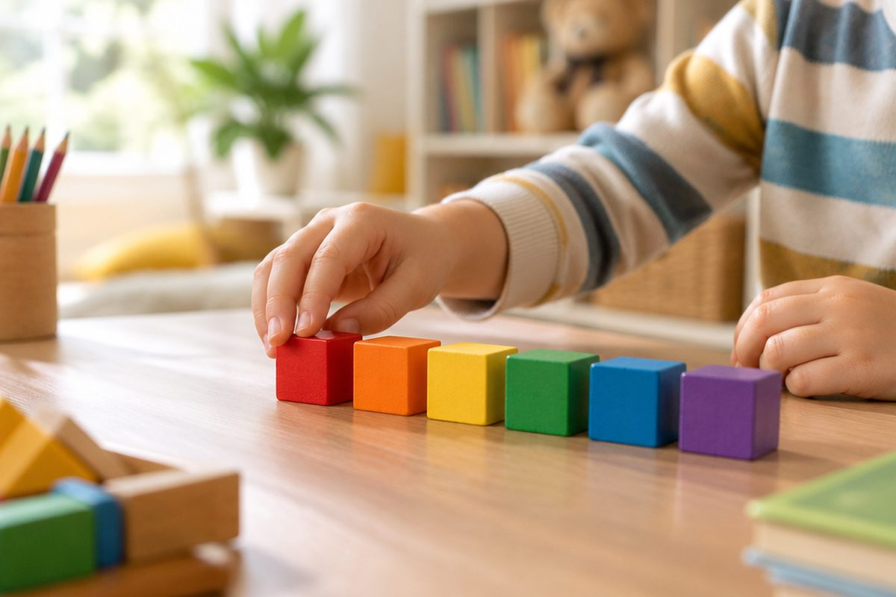

いち, に, さん! 일본어로 10까지 세어 볼까?

숨바꼭질할 때 '하나, 둘, 셋' 하고 세지요? 일본 아이들은 'いち, に, さん(이치, 니, 상)' 하고 세어요. 오늘은 일본어로 1부터 10까지 세는 법을 배워요.
1부터 5까지
1은 いち(ichi, 이치), 2는 に(ni, 니), 3은 さん(san, 상), 4는 よん(yon, 용), 5는 ご(go, 고)예요.
に는 한 글자, ご도 한 글자라서 짧아요. 짧은 숫자일수록 또렷하게 말해요.
さん의 ん은 받침처럼 앞 글자에 붙어서 한 번에 '상' 하고 소리 내요.
1⃣ いち(이치) 2⃣ に(니) 3⃣ さん(상) 4⃣ よん(용) 5⃣ ご(고)
6부터 10까지와 작은 ゅ
6은 ろく(roku, 로쿠), 7은 なな(nana, 나나), 8은 はち(hachi, 하치), 9는 きゅう(kyuu, 큐-), 10은 じゅう(juu, 주-)예요.
きゅう와 じゅう에는 작은 ゅ가 들어 있어요. 작은 ゅ는 앞 글자와 합쳐서 한 소리가 돼요. き(키)+ゅ(유)는 '키유'가 아니라 '큐', じ(지)+ゅ(유)는 '주'예요.
끝의 う는 앞 소리를 길게 늘여요. 그래서 '큐-', '주-' 하고 길게 읽어요.
6⃣ ろく(로쿠) 7⃣ なな(나나) 8⃣ はち(하치) 9⃣ きゅう(큐-) じゅう(주-)
읽는 법이 두 가지인 숫자
4, 7, 9는 읽는 법이 두 가지예요. 4는 よん 또는 し(시), 7은 なな 또는 しち(시치), 9는 きゅう 또는 く(쿠)예요.
보통 수를 셀 때는 よん, なな, きゅう를 더 많이 써요. 이 단원에서도 이 세 가지로 익혀요.
4 = よん(용) / し(시) · 7 = なな(나나) / しち(시치) · 9 = きゅう(큐-) / く(쿠)
숫자로 놀아 봐요
일본어 숫자를 알면 간단한 계산도 일본어로 말할 수 있어요. さん たす よん は なな(상 타스 용 와 나나)는 '3 더하기 4는 7'이라는 뜻이에요.
10보다 큰 수는 じゅう 뒤에 숫자를 붙여요. 11은 じゅういち(주-이치), 12는 じゅうに(주-니)예요.
+ → さん たす よん は なな (3 + 4 = 7) / じゅう + いち → じゅういち(11)
핵심 낱말
- 작은 ゅ
- 앞 글자와 합쳐져 한 소리가 되는 작은 글자. きゅ(큐), じゅ(주).
- 긴소리
- 앞 소리를 길게 늘여 읽는 소리. きゅう는 '큐-'로 읽어요.
- たす
- '더하기'라는 뜻의 말. 타스라고 읽어요.
꼭 알아야 할 표현
| いち | 1, 하나 | ichi (이치) |
| に | 2, 둘 | ni (니) |
| さん | 3, 셋 | san (상) |
| よん | 4, 넷 (し라고도 읽어요) | yon (용) |
| ご | 5, 다섯 | go (고) |
| ろく | 6, 여섯 | roku (로쿠) |
| なな | 7, 일곱 (しち라고도 읽어요) | nana (나나) |
| はち | 8, 여덟 | hachi (하치) |
| きゅう | 9, 아홉 (く라고도 읽어요) | kyuu (큐-) |
| じゅう | 10, 열 | juu (주-) |
| じゅういち | 11, 열하나 | juuichi (주-이치) |
한 줄 정리
- 1~5는 いち, に, さん, よん, ご(이치, 니, 상, 용, 고)예요.
- 6~10은 ろく, なな, はち, きゅう, じゅう(로쿠, 나나, 하치, 큐-, 주-)예요.
- 작은 ゅ는 앞 글자와 합쳐 한 소리가 되고, 4·7·9는 읽는 법이 두 가지예요.
학교 교육과정 연결 (가정 학습 과정)
초등학교 정규 교육과정에는 일본어가 없어요. 처음 배우는 아이를 위한 가정 학습용 입문 단원이에요.